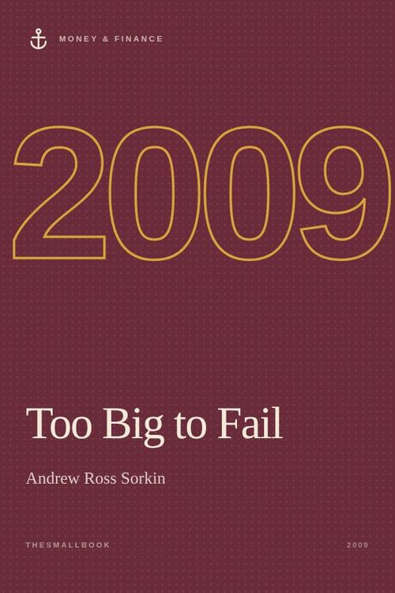

Library › Authors › Andrew Ross Sorkin
Books by Andrew Ross Sorkin
Andrew Ross Sorkin has one book in the library. Every book here is read down to the big idea, the lessons, the lines worth keeping and the actions worth taking. Start with the summary, then buy the full book if it earns a place on your shelf.

Too Big to Fail: The Inside Story of How Wall Street and Washington Fought to Save the Financial System
2009 · 12 min · 8 lessons
Sorkin's minute-by-minute chronicle of the 2008 crisis: Bear, Lehman, AIG, Merrill, WaMu and TARP, the deals, the egos and the decisions that defined a generation.
Too Big to Fail is the definitive tick-tock of 2008's fatal months: Bear Stearns' forced marriage to JPMorgan (March), the summer of denial, the Fannie-Freddie conservatorship (September 5), the catastrophic Lehman weekend (September 12-14, Barclays blocked, Bank of America defecting to Merrill), AIG's $85 billion rescue (September 16), WaMu's seizure, Morgan Stanley and Goldman's terror, and the TARP saga (voted down September 29, markets convulsing, passed October 3). Through hundreds of interviews, Sorkin...
Lessons in the summary
- In a Crisis, Speed Beats Elegance
- Confidence Is the Collateral: Guard the Narrative
- Letting One Fail to Teach a Lesson Can Kill the Class
- Rescue Prices Are Set by Desperation, Not Valuation
- Coalitions Collapse When Blame Is Distributed
- Personal History Is a Negotiating Variable
- The System's Real Balance Sheet Is Trust Between a Dozen People
- Write the Autopsy While It's Bleeding
Lines worth keeping
- We're going to have to decide in the next 24 hours what the world looks like on Monday.
- There are no atheists in a foxhole and no free marketers in a bank run.
- The failure of one institution can now take down the system: that was never supposed to be possible.
Questions Andrew Ross Sorkin helps answer
Read nearby authors next
- Nassim Nicholas Taleb 4 books
- Morgan Housel 3 books
- Saurabh Mukherjea 3 books
- Tony Robbins 3 books
- Michael Lewis 2 books
- Raghuram Rajan 2 books
- Scott Galloway 2 books
- Abhijit V. Banerjee & Esther Duflo 1 book
Questions Andrew Ross Sorkin helps answer
Where should I start with Andrew Ross Sorkin? Start with Too Big to Fail: The Inside Story of How Wall Street and Washington Fought to Save the Financial System: Sorkin's minute-by-minute chronicle of the 2008 crisis: Bear, Lehman, AIG, Merrill, WaMu and TARP, the deals, the egos and the decisions that defined a generation.